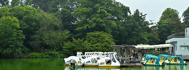
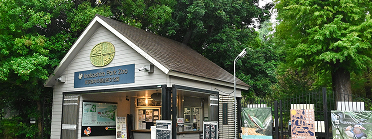
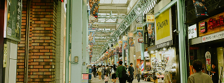
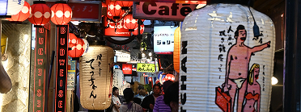
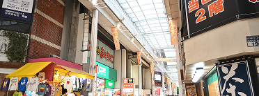
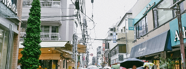

SPOTS in KICHIJYOJI
緑ゆたかな井の頭恩賜公園を中心に、駅前の商店街やハーモニカ横丁、個性派カフェ、古着＆雑貨の小さな名店まで、歩いて巡れる“ぎゅっと濃い”街。
季節の景色、食べ歩き、映画やミニギャラリーまで、一日で“暮らすように”楽しめます。
井の頭恩賜公園

吉祥寺のシンボルとなる大公園。池の周りをぐるりと回れる遊歩道、ボート、季節の花木で一日中ゆったり過ごせます。朝は小鳥の声、夕方は水面に映る夕焼けがきれい。
東京都武蔵野市御殿山〜三鷹市井の頭（公園一帯）
吉祥寺駅 南口 徒歩10分前後
東京都井の頭自然文化園

のんびりサイズの動物園と資料館が一体になった施設。リスの小径や水生物園など、近い距離で生き物を観察できます。公園散歩と組み合わせると半日コースに最適。
東京都武蔵野市御殿山1丁目 周辺
吉祥寺駅 公園口（南口） 徒歩8分
吉祥寺サンロード

駅北口から一直線に伸びるメイン商店街。日用品からスイーツ、ドラッグストアまで“生活の全部”が揃い、雨の日も歩きやすいアーケード。イベントやセールも頻繁に開催
東京都武蔵野市吉祥寺本町1〜2丁目（サンロード通り）
吉祥寺駅 北口 すぐ
ハモニカ横丁

戦後の面影を残す細い路地に小さな名店がぎゅっと集合。昼は定食や甘味、夜は立ち飲みやおでんでにぎわいます。昭和レトロな雰囲気と人情味が魅力。
東京都武蔵野市吉祥寺本町1丁目（北口ロータリー西側一帯）
吉祥寺駅 北口 徒歩1–3分
ダイヤ街

サンロードと交差する買い回りに便利なショッピングストリート。雑貨・コスメ・アクセサリーや軽食のテイクアウトが充実。短時間でもテンポよく見て回れます。
東京都武蔵野市吉祥寺本町1丁目（ダイヤ街エリア）
吉祥寺駅 北口 徒歩1–3分
吉祥寺中道通り

古着、セレクト雑貨、小さなカフェが点在する感度の高い通り。路地に入るほど個性派ショップに出会える“宝探し”エリア。公園帰りの寄り道にもぴったり。
東京都武蔵野市吉祥寺本町2〜3丁目（中道通り沿い）
吉祥寺駅 北口 徒歩3–7分
UPLINK吉祥寺

ミニシアター系から特集上映、トークイベントまで幅広い編成が魅力。ロビーのZINE・物販コーナーもカルチャー好きに人気。鑑賞後は横丁やカフェで余韻を楽しめます。
東京都武蔵野市吉祥寺本町（商業施設内）
吉祥寺駅 北口 徒歩約5分
吉祥寺シアター

演劇・ダンス・朗読などを間近で体感できる小劇場。若手から実力派まで多彩な公演が組まれ、地域の文化拠点として親しまれています。終演後の街歩きも楽しい立地。
東京都武蔵野市吉祥寺本町1丁目 周辺
吉祥寺駅 北口 徒歩7–10分